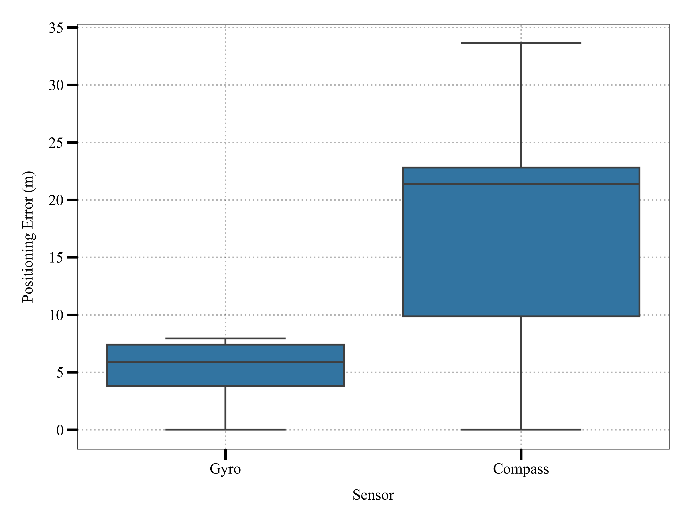

Positioning Error Analysis Summary
📊 Key Findings
| Method |
Average Error |
Min Error |
Max Error |
Standard Deviation |
| 📱 Gyro |
5.45 m |
0.00 m |
7.94 m |
2.23 m |
| 🧠Compass |
18.27 m |
0.00 m |
33.61 m |
8.49 m |
📈 Visual Analysis
Three visualizations were created to analyze the positioning errors:
1. Distance Error Plot
This plot shows how positioning errors change as the user walks further. Key observations:
- Gyro errors (blue) are consistently lower than Compass errors (red)
- Compass errors increase more rapidly with distance
- Gyro errors stabilize around 6-7 meters even at longer distances
2. Error Distribution (ECDF Plot)
The Empirical Cumulative Distribution Function (ECDF) shows:
- Gyro errors are more tightly distributed in the lower range
- About 80% of Gyro errors are below 7.4 meters
- Compass errors have a much wider distribution
- Most Compass errors are above 9.8 meters
3. Error Range Comparison (Box Plot)

The box plot clearly demonstrates:
- Gyro has a much narrower error range
- Compass errors are not only higher but more variable
- The median (middle line) of Gyro errors (~5.9m) is much lower than Compass (~21.4m)
💡 Conclusion
Gyroscope-based positioning significantly outperforms compass-based positioning:
- Gyro errors are 70% lower on average
- Gyro errors show less variability and more consistency
- Gyro positioning maintains better accuracy over longer distances
This analysis confirms that gyroscope-based positioning is the more reliable method for indoor positioning in this scenario, particularly when walking longer distances.